Pistols
The Pistols are essentially the "all-rounders" of The Horde. Compared to the other guns in their tier, the pistols are cheap and have medium damage, medium range, medium fire rates, and medium armor piercing. The pistols are good against any target, whether that be armored players, bulky bosses, or hordes of monsters. Pistols use pistol magazines for ammunition,
Luger P08
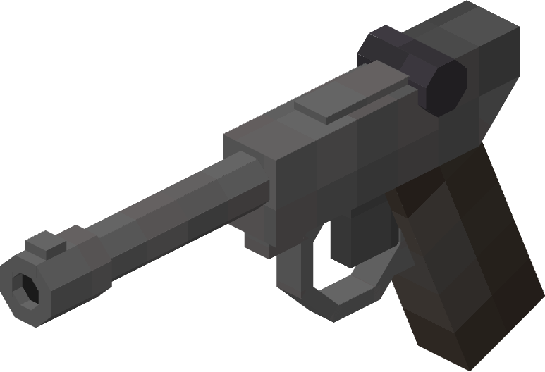
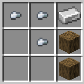
Stats
Max ammo - 8
Damage - 9
Range - 55 blocks
Rate of Fire - 6 ticks
Reload Speed - 40 ticks
Recoil - 5/14
Glock 17
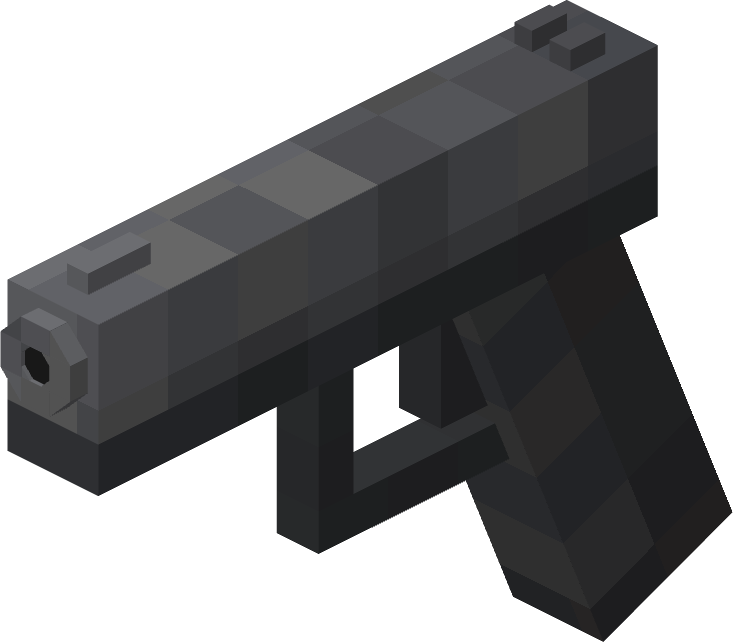
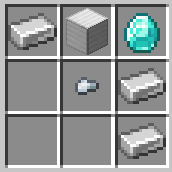
Stats
Max ammo - 14
Damage - 13
Range - 70 blocks
Rate of Fire - 6 ticks
Reload Speed - 40 ticks
Recoil - 5/14
Desert Eagle
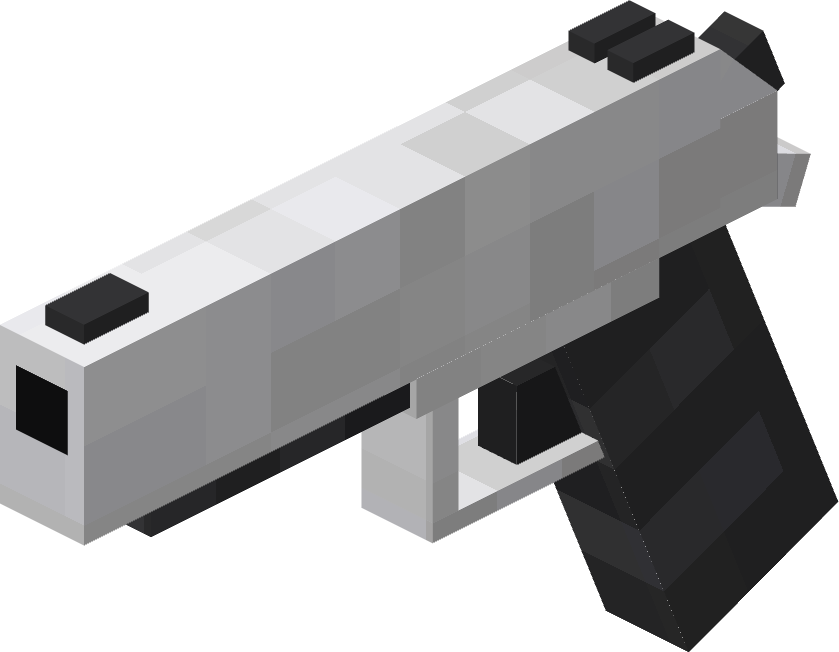
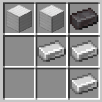
Stats
Max ammo - 9
Damage - 19
Range - 112 blocks
Rate of Fire - 9 ticks
Reload Speed - 60 ticks
Recoil - 5/14
Assault Rifles
The Assault Rifles are categorized by their high rate of fire and low damage. The Assault Rifles are perfect for shredding through high-hp, low armor targets. Despite the surface-level high damage-per-second, these guns has very low armor penetration, making it noticeably worse against heavily armored targets. They use assault rifle magazines for ammunition.
Ak-47
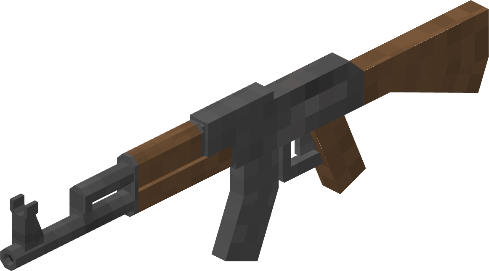
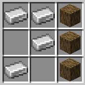
Stats
Max ammo - 26
Damage - 5
Range - 38 blocks
Rate of Fire - 4 ticks
Reload Speed - 65 ticks
Recoil - 5/14
M4A1
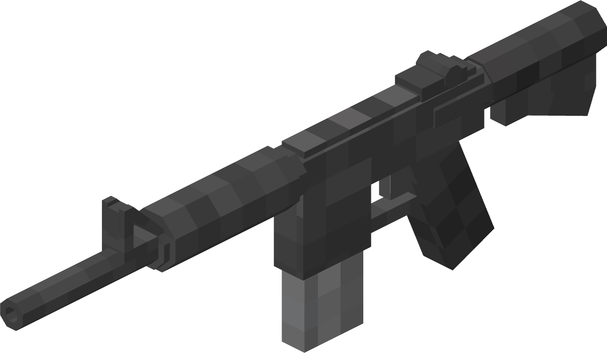
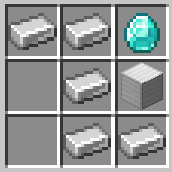
Stats
Max ammo - 32
Damage - 7
Range - 58 blocks
Rate of Fire - 4 ticks
Reload Speed - 50 ticks
Recoil - 4/14
FN Scar
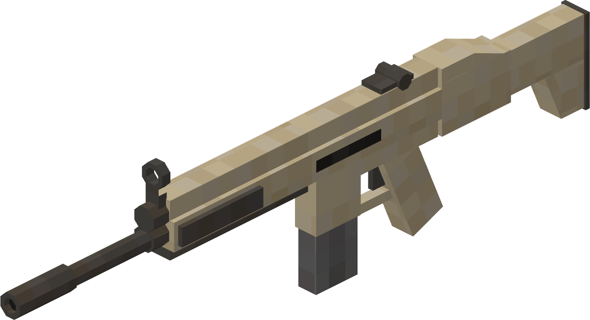
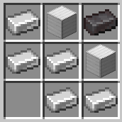
Stats
Max ammo - 36
Damage - 9
Range - 82 blocks
Rate of Fire - 4 ticks
Reload Speed - 60 ticks
Recoil - 3/14
SMGs
The SMGs take the best and worst attributes of the Assault Rifle to the extreme. The SMGs have even higher fire rates and even lower damage. The biggest difference between the two is the ammunition that they use. The SMGs use Pistol Magazines, so their overall cost-per-bullet is much lower than that of the Assault Rifles.
Thompson Submachine Gun
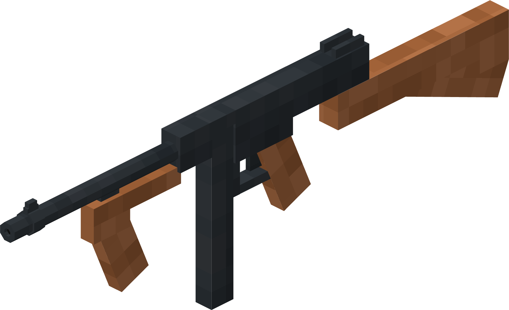
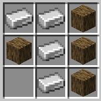
Stats
Max ammo - 26
Damage - 3
Range - 34 blocks
Rate of Fire - 1 ticks
Reload Speed - 40 ticks
Recoil - 3/14
Heckler & Koch MP5
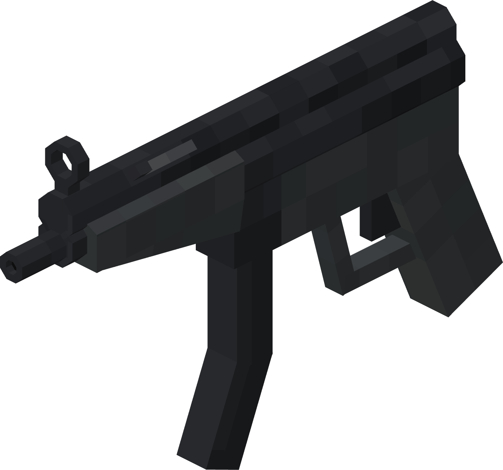
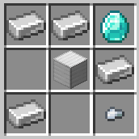
Stats
Max ammo - 28
Damage - 5
Range - 52 blocks
Rate of Fire - 1 ticks
Reload Speed - 35 ticks
Recoil - 3/14
P90
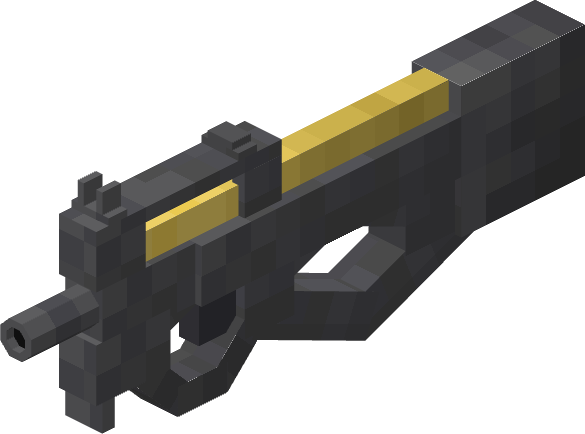
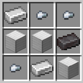
Stats
Max ammo - 40
Damage - 7
Range - 76 blocks
Rate of Fire - 1 ticks
Reload Speed - 40 ticks
Recoil - 3/14
Shotguns
The Shotguns are a very unique category of gun. They have high damage and low range, but their projectiles also have a special attribute. Much like Shotguns from other games, these Shotguns are capable of hitting multiple targets at once. The Shotguns are perfect for fighting against large hordes of monsters in close quarters. However, much like the Assault Rifles and SMGs, the Shotguns have low armor piercing capabilities. Shotguns use shotgun shells for ammunition.
Beretta 486
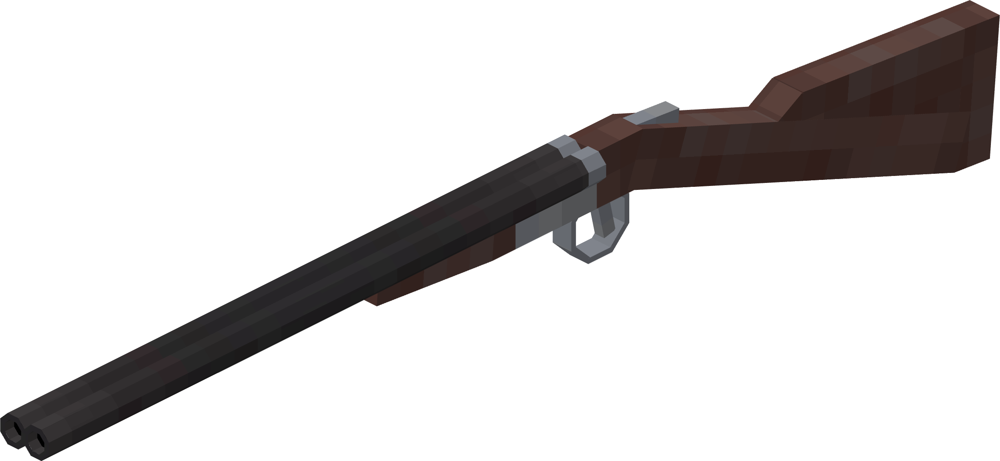
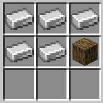
Stats
Max ammo - 2
Damage - 15
Range - 24 blocks
Rate of Fire - 11 ticks
Reload Speed - 50 ticks
Recoil - 7/14
Remington 870
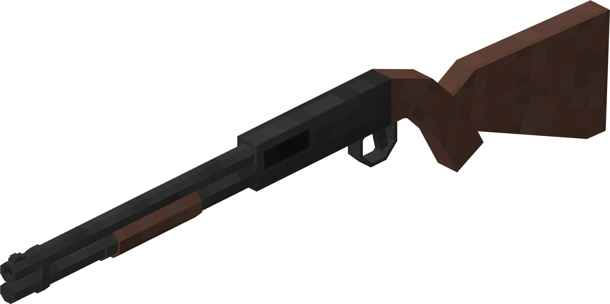
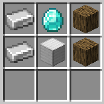
Stats
Max ammo - 8
Damage - 23
Range - 42 blocks
Rate of Fire - 20 ticks
Reload Speed - 11 ticks
Recoil - 7/14
Spas 12
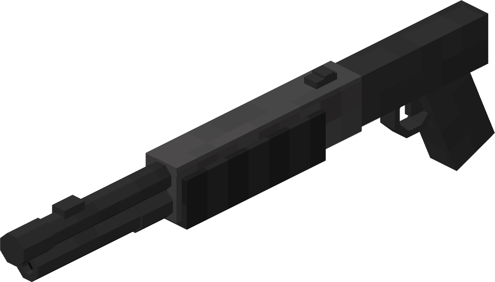
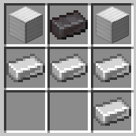
Stats
Max ammo - 10
Damage - 30
Range - 64 blocks
Rate of Fire - 16 ticks
Reload Speed - 15 ticks
Recoil - 7/14
Sniper Rifles
The practical opposite of the Assault Rifles. The Sniper Rifles have the highest range and damage out of all of the guns in The Horde, but has the lowest rate of fire. Additionally, the Sniper Rifles have very strong armor piercing projectiles. These factors all combine to make Sniper Rifles the best guns to use against players and heavily armored targets. They take sniper rifle magazines for ammunition.
Winchester Model 70
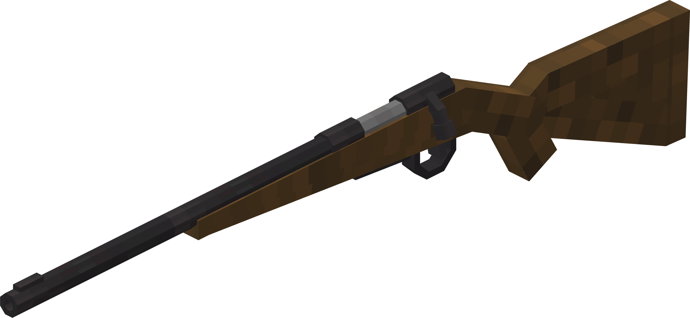
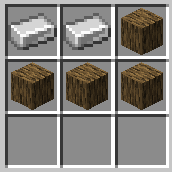
Stats
Max ammo - 5
Damage - 19
Range - 98 blocks
Rate of Fire - 24 ticks
Reload Speed - 60 ticks
Recoil - 7/14
Springfield M1A
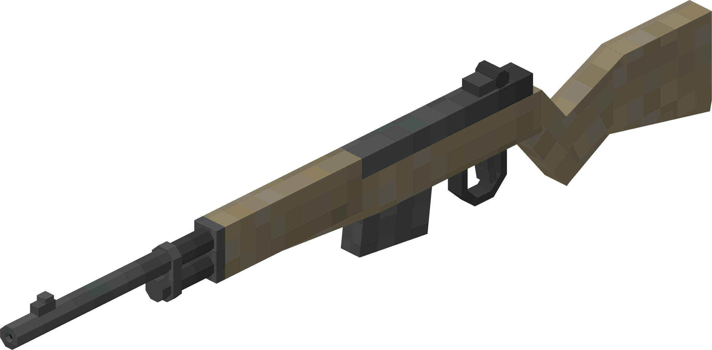
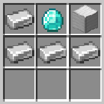
Stats
Max ammo - 6
Damage - 27
Range - 150 blocks
Rate of Fire - 18 ticks
Reload Speed - 70 ticks
Recoil - 7/14
Barrett M82
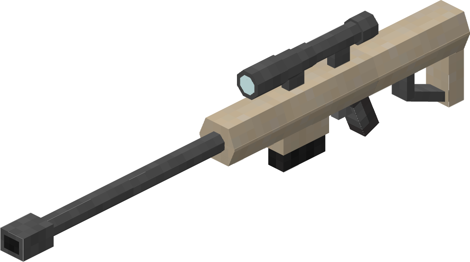
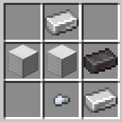
Stats
Max ammo - 4
Damage - 38
Range - 210 blocks
Rate of Fire - 21 ticks
Reload Speed - 70 ticks
Recoil - 7/14
Revolvers
The Revolvers are a unique class of gun. Compared to the other Tier 1 guns, the Tier 1 stats are very high, the Tier 2 gun is fairly powerful, and there simply isn't a Tier 3 Revolver. This powerful start comes at the cost of very gunpowder-expensive ammunition. The Revolver is a powerful all-rounder gun in the early-mid game, but is invalid to use in the late game. The Revolver, much like the Sniper Rifle, has very strong armor penetration. Revolver bullets are what they take for ammunition.
Smith & Wesson Model 29
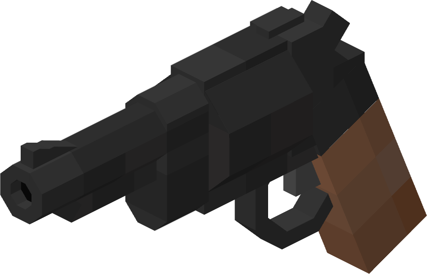
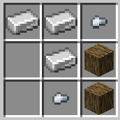
Stats
Max ammo - 6
Damage - 14
Range - 22 blocks
Rate of Fire - 8 ticks
Reload Speed - 65 ticks
Recoil - 6/14
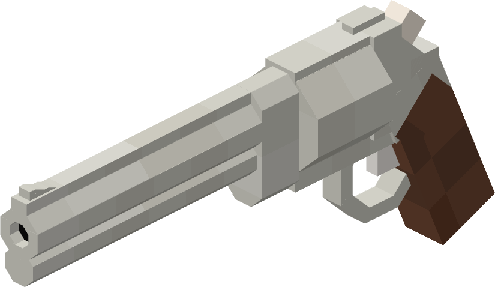
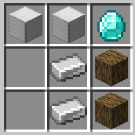
Stats
Max ammo - 6
Damage - 19
Range - 70 blocks
Rate of Fire - 8 ticks
Reload Speed - 65 ticks
Recoil - 5/14
Grenade Launchers
The Grenade Launchers are the cheaper option for explosive firepower in The Horde. While their projectiles have a downward curve and are generally slower than rockets, the Grenade Launchers are powerful explosive weapons. They can deal solid amounts of damage to lots of targets at once. As with most explosives, the projectiles shot from the Grenade Launchers will break blocks. Because the projectiles fire in an arc, they can be fired over walls or other obstructions. Grenade launchers take explosive rounds and NOT grenades.
M79
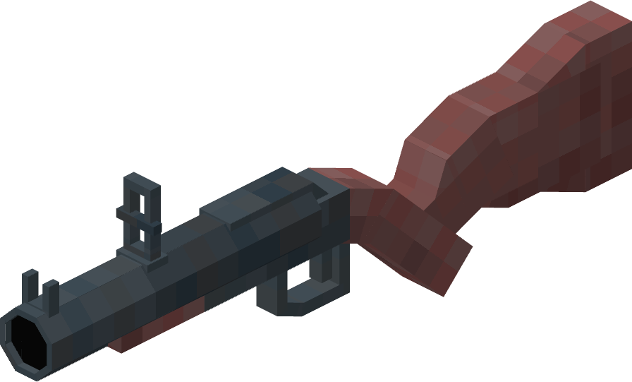
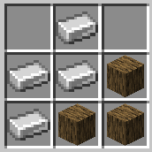
Stats
Max ammo - 1
Damage - 29
Range - 90 blocks
Rate of Fire - 20 ticks
Reload Speed - 25 ticks
Recoil - 6/14
GL06
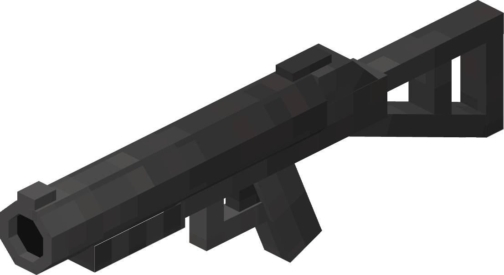
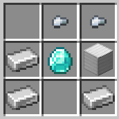
Stats
Max ammo - 1
Damage - 43
Range - 120 blocks
Rate of Fire - 10 ticks
Reload Speed - 30 ticks
Recoil - 4/14
Milkor MGL
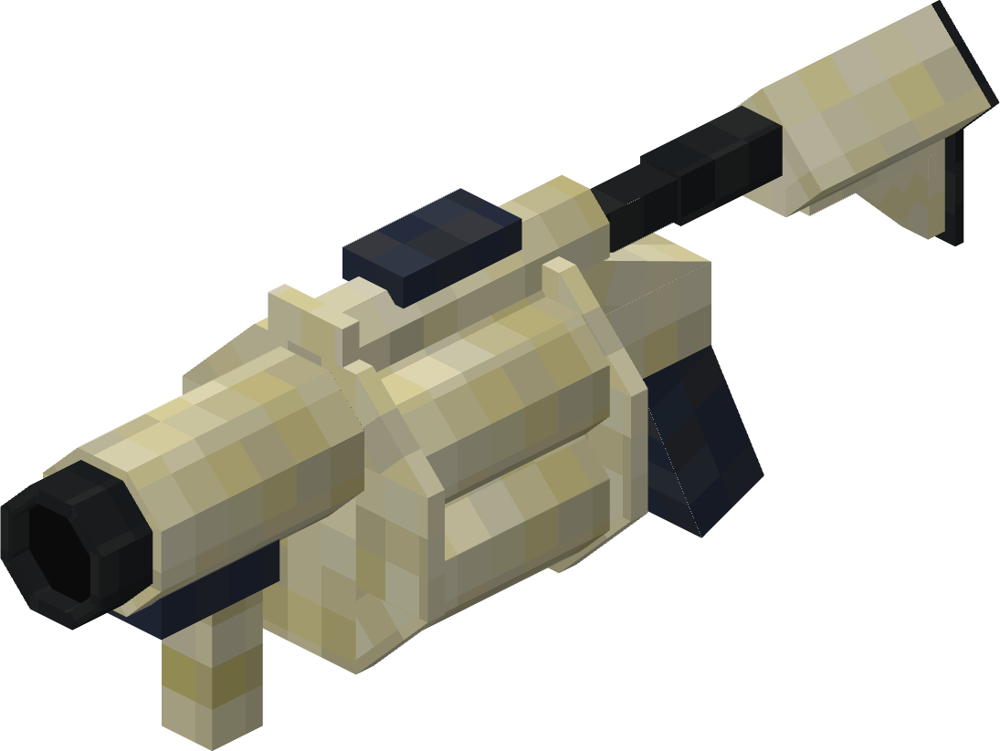
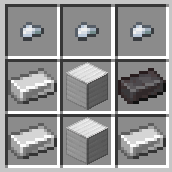
Stats
Max ammo - 6
Damage - 43
Range - 170 blocks
Rate of Fire - 10 ticks
Reload Speed - 20 ticks
Recoil - 5/14
Rocket Launchers
The Rocket Launchers are the stronger, albeit more expensive, option for explosive firepower in The Horde. While their ammunition is fairly expensive, the Rocket Launchers have much higher range than their Grenade Launcher counterparts. Their rockets move very quickly and fire in a straight line. The damage between the Grenade Launchers and Rocket Launchers is relatively equal between tiers. Rocket launchers use rockets for ammunition.
M72 Law
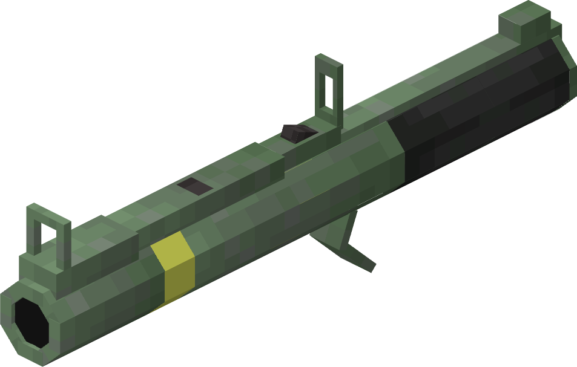
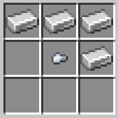
Stats
Max ammo - 1
Damage - 29
Range - 120 blocks
Rate of Fire - 20 ticks
Reload Speed - 70 ticks
Recoil - 9/14
RPG-7
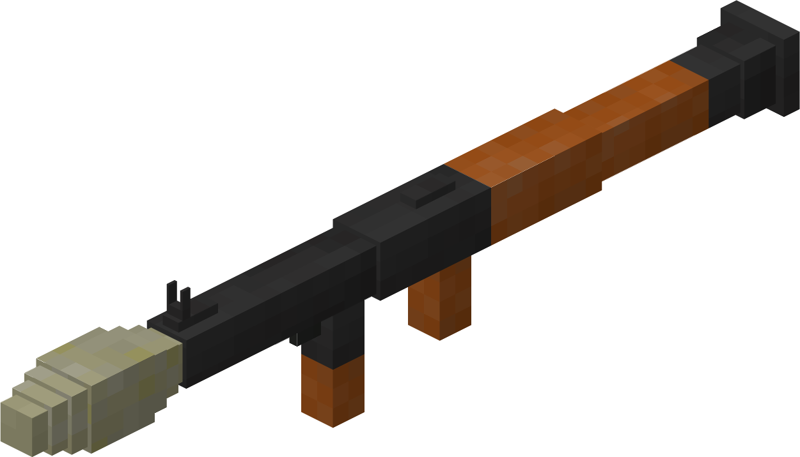
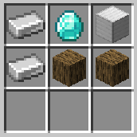
Stats
Max ammo - 1
Damage - 43
Range - 180 blocks
Rate of Fire - 10 ticks
Reload Speed - 70 ticks
Recoil - 5/14
M202 Flash
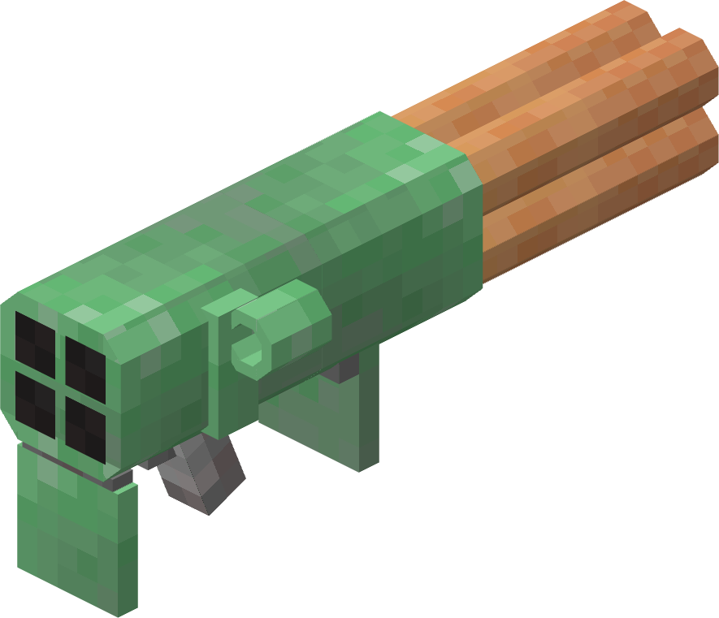
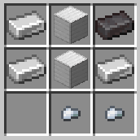
Stats
Max ammo - 4
Damage - 43
Range - 260 blocks
Rate of Fire - 10 ticks
Reload Speed - 50 ticks
Recoil - 5/14
Simple Bandage
The Simple Bandage is renowned for its cheap cost. Costing only three wool makes it easy to obtain very early game. However, the Simple Bandage isn't the best healing item, as it only heals four hp over a short period.

.png)
Advanced Bandage
The Advanced Bandage is a better variant of the Simple Bandage. It costs more resources, but is double as effective. The Advanced Bandage restores eight hp over a short period of time.

.png)
Medkit
The Medkit is a very solid medical item. It will instantly restore five hp and heal an addition four over time. The Medkit's big attribute that sets it apart from the rest, is its ability to clear all negative effects. The Medkit will remove negative effects (like poison and mining fatigue) but keep the positive effects (like speed and haste).

.png)
Syringe
The Syringe does nothing on it's own, quite similar to a glass bottle. But also similar to a glass bottle, the Syringe can be used in a multitude of recipes to create items to grant the user various effects.

.png)
Regeneration Syringe
The Regeneration Syringe applies the regeneration effect when used. It's similar to a regeneration potion, except it will apply the effect instantly. It's recipe is also fairly cheaper as well. All of these upsides are at the cost of modularity, as the player is unable to change the duration or strength or the effect. The Regeneration Syringe heals about sixteen hp.

.png)
Absorption Syringe
The Absorption Syringe applies the absorption effect to the user. Absorption hearts are functionally additional hp, except they cannot be regenerated. Effective use of the Absorption Syringe can change the tide of any battle, as having additional hp can make the difference between dying to a gun shot and surviving it. The Absorption Syringe grants eight absorption hearts.

.png)
Swiftness Syringe
The Swiftness Syringe grants a great speed effect for a short period of time. This makes the Swiftness Syringe ideal for a swift getaway or for use in melee/short range combat.

.png)
Resistance Syringe
The Resistance Syringe applies the resistance effect. Not only is the resistance effect good against protecting from other various forms of damage, it also reduces incoming damage from gun projectiles.

.png)
Health Boost Syringe
The Health Boost Syringe is one of the most important items. It increases the user's maximum hp by eight points for a medium period of time. While more powerful options are available, it's low cost makes it quite the essential item to have, especially early-game.

.png)
Antidote Syringe
The Antidote Syringe will cure the user of the poison and wither status effects. This makes the item especially handy to have when fighting against Cave Spiders or players with Chemical Grenades.

.png)
Laser Shield MK1
The Laser Shield MK1 is a powerful item that provides a significant HP boost for eight-and-a-half minutes. While this is powerful on its own, a more powerful Laser Shield option is avaliable for players with more resources to spare!

.png)
Laser Shield MK2
The Laser Shield MK2 is a very powerful item. Upon consumption, it more than doubles the user's base HP for eighteen minutes. This immense hp boost can prove to be invaluable when fighting against opponents with high damaging guns. This powerful item comes at a cost, as the Laser Shield MK2 is very, very expensive.

.png)
C4
The C4 is a basic remote explosive. The C4 can be placed down and then detonated whenever you'd like. It is useful in offensive and defensive situations. The C4 can also be used for large-scale controlled explosions, whether it's a hill or your friend's base that you're blowing up.

.png)
C4 Remote
The C4 is nothing without the C4 Remote. The C4 Remote allows the player to explode their nearby C4s whenever they please. The C4 Remote is capable of activating up to 200 C4s at a time.

.png)
Landmine
You are most likely familiar with the Landmine. The Landmine is a simple device that produces an explosion when a mob comes into contact with it. Landmines will also explode whenever they are shot by arrows or tridents, which can be utilized to explode Landmines from a distance.

.png)
Pipe Bomb
The Pipe Bomb is a very simple throwable explosive. Upon impact, it will produce a small explosion that will damage nearby entities. The explosion is very small and won't break blocks very well. That being said, the explosive itself deals a solid amount of AoE damage.

.png)
Molotov Cocktail
The Molotov Cocktail is a fire-producing throwable. Upon impact, it will produce fire in a 3x3x3 area. It doesn't do very much damage on the surface, but the lingering fire left by its denotation will certainly pack a punch.

.png)
Grenade
The Grenade is the most powerful throwable. Upon impact, it will produce a large explosion, very similar to that of a creeper. Be mindful, however, as it will break blocks very easily. In addition to the damage brought by the explosion, the Grenade also deals some flat AoE damage.

.png)
Chemical Grenade
The Chemical Grenade is a unique throwable. It won't break blocks or damage its surroundings, or even inflict any flat damage. However, it will poison and apply other negative effects to any entities in the target area.

.png)
Auto Turret
The Auto Turret is the simplest of the turrets added by Gamingbarn's Guns. While it might not boast any special abilities, it has the highest flat range and damage of all turrets.

.png)
Sentry Turret
The Sentry Turret is the most fragile of all the turrets, but it makes up for this in its ability to hide underground. This turret is best used for either suprising attacking players, or for secretly defending your base.

.png)
Perdition Turret
The Perdition Turret might be lacking in damage and range, but it more than makes up for that with it's insane bulkiness. When underground, the turret is practically invincible, not to mention that the incendiary nature of the projectiles allows the turret to ignore target armor. It is recommended that you put this turret in front of other turrets.

.png)
Turret Menu
The most important part of the turrets is their configuration menu. By running the command in chat, /trigger turret_settings, while standing near a turret you can bring up a menu in chat that can be used to do several different things to the turret.
Turret Type - The Type of Turret You're Editing. (Auto Turret, Sentry Turret, etc)
Target Type - What the Turret will shoot at
Repair Turret - Spend 1 iron ingot to heal the Turret for 10 HP
Pickup Turret - Remove the Turret and receive it as an item. Turret must be at full HP
Salvage Turret - Remove the Turret for a portion of the resources. Turret must be in the destroyed stage


Turret Stages
Functional
The functional stage is what all turrets start in. The turret functions as expected, it will shoot at whatever its target is set to. Any mobs the turret shoots at will try to attack the turret.

Damaged
In this stage, the turret stops moving and will no longer shoot at targets. However, the turret can be repaired and restored to the Functional stage. Any mobs attacking the turret will stop attacking.

Destroyed
Once the turret enters this stage, the turret has taken far too much damage to be repaired. The turret, however, can be salvaged to gain a portion of the resources used to craft it. If the turret is not salvaged, after around twenty minutes it will despawn. Since all mobs stop attacking the turret once it enters the damaged stage, it's most likely that the turret was attacked by a player if it is in the destroyed stage. (This can also occur if the turret was attacked by a Warden or Wither)


.png)

.png)

.png)